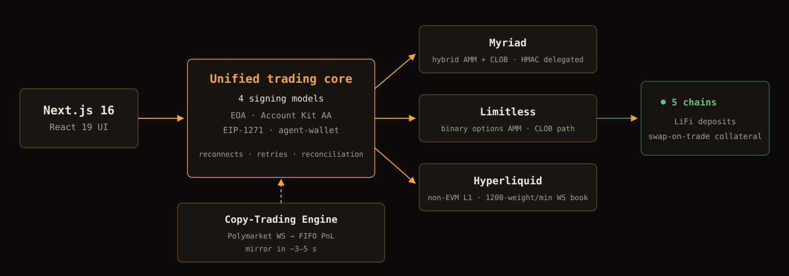
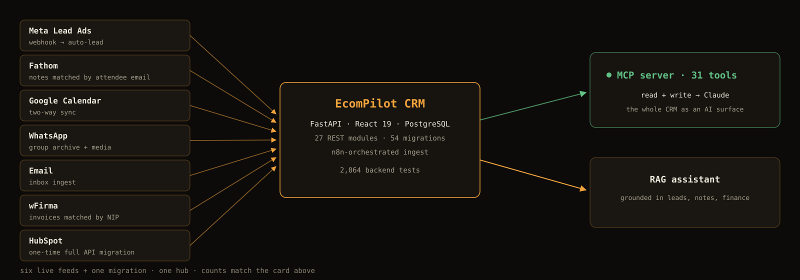
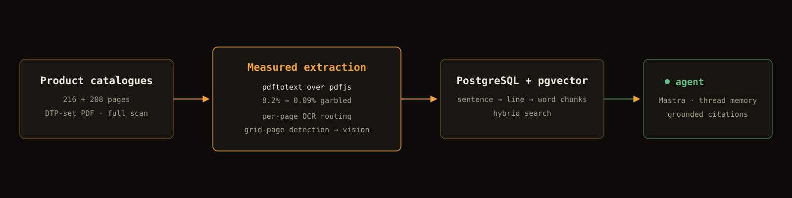
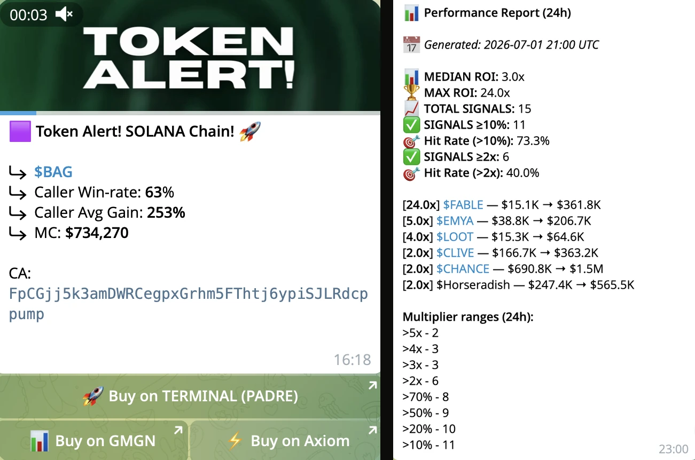
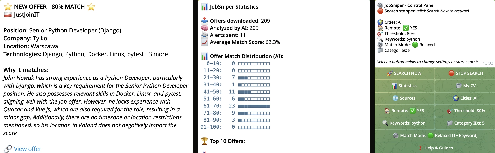
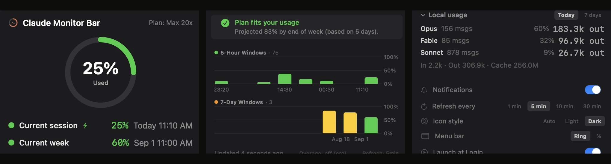

// web3 · ai · backend automation
Everything fails.
Mine gets back up.
I design, build and operate production systems — on-chain trading platforms, automation bots, AI pipelines, and the backends and internal CRM behind them. They run unattended, so half the code is reconnects, retries and reconciliation.
Self-taught, production-tested.
I'm self-taught, and almost everything I know comes from building systems that had to work in production — then fixing the parts that only break once real users are hitting them. A fair share of those failures traced back to bugs I'd shipped myself; that's where the recovery habit comes from.
Before any of this I spent six years as a manual QA tester, which means I learned how software fails before I learned how to write it. That order turns out to matter in 2026: anyone can generate plausible code now, and the real work is verifying it — scope, error handling, whether the tests assert anything or just run green. 860 of my commits in the main product repo touch test files.
Eighteen months for everything below. The arithmetic looks wrong until you account for what changed: a model does a lot of the typing now. The reviewing is still mine, and that's what the six years bought.
Generation got cheap. Knowing what will fail didn't.
Trading platforms, bots, AI integrations, a CRM product — the range is wide, but the job is the same: software a business leans on daily, where somebody notices within minutes when it stops. I don't just ship these systems; I operate them, and that changes how you build them.
I'd be building this stuff anyway — the two open-source tools in the grid below started as weekend projects for my own use, before anyone asked for them.
- rolefull-stack / systems engineer
- background6+ yrs QA → dev since 2025
- focusweb3 · ai · automation
- moderemote · B2B preferred
- codeTypeScript · Python · Swift
- status● available for work
Running in production
Systems I designed and shipped end to end. Where the code is private or client-owned, the card links to a sanitized architecture writeup; open-source projects link straight to the repo.
Multi-Protocol Prediction-Market Aggregator
A production trading terminal that unifies multiple on-chain outcome-market venues — including Myriad, Limitless and Hyperliquid — into one UI, with a Polymarket-driven copy-trading engine, cross-chain deposits and portfolio aggregation across protocols. Built end-to-end in Next.js 16 / React 19 across four signing models (EOA, Account Kit AA, EIP-1271, agent-wallet). Client code is under NDA; a sanitized architecture writeup is linked below.

EcomPilot CRM
Internal CRM + ops platform I designed, built and run for EcomPilot — an e-commerce services company selling on Allegro and other marketplaces. FastAPI + React 19 over PostgreSQL — sales pipeline, tasks, calendar, finance and a WeasyPrint offer generator — fed by seven integration sources (Meta Lead Ads, Fathom, Google Calendar, HubSpot, WhatsApp, email, wFirma invoicing). A 31-tool MCP server exposes the live app to Claude for read and write. In production, login-gated, source private.

Catalogue RAG Assistant

An AI assistant for a Polish horticulture supplier, answering from its real product catalogues — 216 + 208 pages chunked into PostgreSQL + pgvector. Two-dev build; my side: an extraction pipeline picked by measurement (pdfjs garbled 8.2% of characters, poppler 0.09%), citations, chat and admin, and most of the React UI and its tests.
Crypto Trading Analytics Bot

Telegram bot for real-time crypto signal monitoring — per-user filters, multiplier tracking, subscriptions and Solana / NOWPayments billing. A 24/7 fintech system on a Redis hot path with async dual-write to PostgreSQL.
JobSniper — AI Job Monitor

Scans five job boards, parses your CV, and uses GPT-4o-mini to score each offer 0–100% with reasoning. High matches trigger an instant Telegram alert. Full observability with Prometheus + Grafana and a circuit breaker around the LLM.
Claude Monitor Bar

Native macOS menu-bar app that surfaces Claude Code API rate limits in real time — 5h / 7d / Sonnet windows — with a color-coded progress ring, usage-history charts, plan recommendations and self-installing auto-updates.
What I build with
pkg:fullstack
Type-safe apps end to end — App Router frontends and async services that handle thousands of operations in parallel without blocking.
pkg:web3
EVM smart wallets, account abstraction (EIP-7702), on-chain trading, cross-chain bridges and crypto payments.
pkg:data
Dual-write architecture — Redis for the hot path, PostgreSQL for persistence and analytics, typed migrations with Drizzle.
pkg:ai & infra
LLM integrations with circuit breakers, containerized deploys, monitoring, graceful shutdown and auto-recovery — and verification of AI-generated code before it ships: scope control, error paths, tests that actually assert something.
Engineering principles
Transparency before sales
If your idea doesn't make technical sense or there's a simpler path, I'll tell you. I'd rather lose a contract than watch a client burn budget on something that won't work.
Understand, then build
Before I write code I need to understand what can break — what happens when the server crashes, the API errors, the data is incomplete. I ask before deployment, not after a client call.
Operate what you ship
I run the systems I build. When something breaks in production, the alert reaches me, not a backlog — and the fix usually ships the same day.
System, not script
A script needs you to run it. A system runs for you — with monitoring, logs, alerts and documentation. I build the latter.
Got a problem to solve?
You don't need a finished spec. Describe the problem — we'll talk about whether automation makes sense, what it might cost, and how long it would realistically take.
If it's outside what I do well, I'll say so on the first call and point you somewhere better.